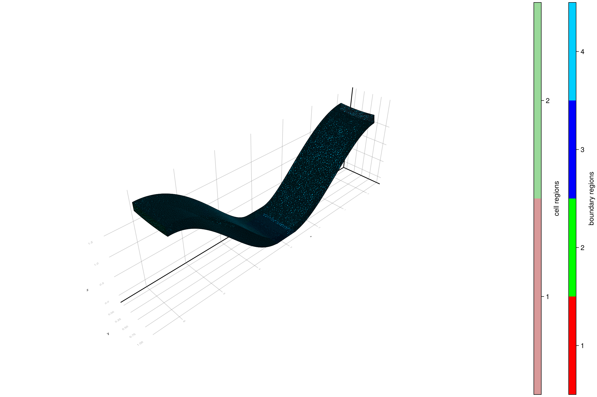

312 : Periodic Boundary 3D
This is a simple demonstration and validation of the generic periodic boundary operator.
We construct an unstructured periodic 3D grid and solve a simple linear elastic problem with periodic coupling along the x-axis.

module Example312_PeriodicBoundary3D
using ExtendableFEM
using ExtendableGrids
using SimplexGridFactory
using GridVisualize
using TetGen
using UnicodePlots
using StaticArrays
using LinearAlgebra
const reg_left = 1
const reg_right = 2
const reg_dirichlet = 3
const reg_default = 4define the Hooke tensor for AlN (from DOI 10.1063/1.1368156)
function material_tensor()
c11 = 396.0
c12 = 137.0
c13 = 108.0
c33 = 373.0
c44 = 116.0
return @SArray [
c11 c12 c13 0 0 0
c12 c11 c13 0 0 0
c13 c13 c33 0 0 0
0 0 0 c44 0 0
0 0 0 0 c44 0
0 0 0 0 0 c44
]
end
# generate the kernels for the linear problem
# ùêÇ: Hooke tensor, ùëì: body force
function make_kernels(ùêÇ, ùëì)
# linear stress-strain mapping
bilinear_kernel!(œÉ, Œµv, qpinfo) = mul!(œÉ, ùêÇ, Œµv)
# body force
linear_kernel!(result, qpinfo) = (result .= ùëì)
return bilinear_kernel!, linear_kernel!
end
"""
create 3D grid with Dirichlet boundary region at the bottom center
"""
function create_grid(; h, height, width, depth)
builder = SimplexGridBuilder(; Generator = TetGen)
# bottom points
b01 = point!(builder, 0, 0, 0)
b02 = point!(builder, 0.45 * width, 0, 0)
b03 = point!(builder, 0.55 * width, 0, 0)
b04 = point!(builder, width, 0, 0)
b11 = point!(builder, 0, depth, 0)
b12 = point!(builder, 0.45 * width, depth, 0)
b13 = point!(builder, 0.55 * width, depth, 0)
b14 = point!(builder, width, depth, 0)
# top points
t01 = point!(builder, 0, 0, height)
t02 = point!(builder, width, 0, height)
t11 = point!(builder, 0, depth, height)
t12 = point!(builder, width, depth, height)
# center points
c01 = point!(builder, 0.5 * width, 0, 0)
c02 = point!(builder, 0.5 * width, 0, height)
c11 = point!(builder, 0.5 * width, depth, 0)
c12 = point!(builder, 0.5 * width, depth, height)
# default faces
facetregion!(builder, reg_default)
facet!(builder, b01, b02, b12, b11)
facet!(builder, b03, b04, b14, b13)
facet!(builder, [t01, c02, c12, t11])
facet!(builder, [c02, t02, t12, c12])
facet!(builder, [b01, b02, c01, c02, t01])
facet!(builder, [c01, b03, b04, t02, c02])
facet!(builder, [b11, b12, c11, c12, t11])
facet!(builder, [c11, b13, b14, t12, c12])
facet!(builder, c01, c02, c12, c11)
# left face
facetregion!(builder, reg_left)
facet!(builder, b01, t01, t11, b11)
# right face
facetregion!(builder, reg_right)
facet!(builder, b04, t02, t12, b14)
# Dirichlet face
facetregion!(builder, reg_dirichlet)
facet!(builder, [b02, c01, c11, b12])
facet!(builder, [c01, b03, b13, c11])
cellregion!(builder, 1)
maxvolume!(builder, h)
regionpoint!(builder, width / 3, depth / 2, height / 2)
cellregion!(builder, 2)
# finer grid on the right half to make the periodic coupling non-trivial
maxvolume!(builder, 0.3 * h)
regionpoint!(builder, 2 * width / 3, depth / 2, height / 2)
return simplexgrid(builder)
end
function main(;
order = 1,
periodic = true,
Plotter = nothing,
force = 1.0,
h = 1.0e-4,
width = 6.0,
height = 0.2,
depth = 1,
kwargs...
)
xgrid = create_grid(; h, width, height, depth)
# create finite element space and solution vector
if order == 1
FES = FESpace{H1P1{3}}(xgrid)
elseif order == 2
FES = FESpace{H1P2{3, 3}}(xgrid)
end
# problem description
PD = ProblemDescription()
u = Unknown("u"; name = "displacement")
assign_unknown!(PD, u)
ùêÇ = material_tensor()
ùëì = force * [0, 0, 1]
bilinear_kernel!, linear_kernel! = make_kernels(ùêÇ, ùëì)
assign_operator!(PD, BilinearOperator(bilinear_kernel!, [εV(u, 1.0)]; kwargs...))
assign_operator!(PD, LinearOperator(linear_kernel!, [id(u)]; kwargs...))
assign_operator!(PD, HomogeneousBoundaryData(u; regions = [reg_dirichlet]))
if periodic
function give_opposite!(y, x)
y .= x
y[1] = width - x[1]
return nothing
end
coupling_matrix = get_periodic_coupling_matrix(FES, reg_left, reg_right, give_opposite!)
display(coupling_matrix)
assign_operator!(PD, CombineDofs(u, u, coupling_matrix; kwargs...))
end
# solve
sol = solve(PD, FES; kwargs...)
displace_mesh!(xgrid, sol[u])
plt = plot([grid(u)], sol; Plotter, do_vector_plots = false, width = 1200, height = 800, title = "displaced mesh", scene3d = :LScene)
return sol, plt
end
end # moduleThis page was generated using Literate.jl.